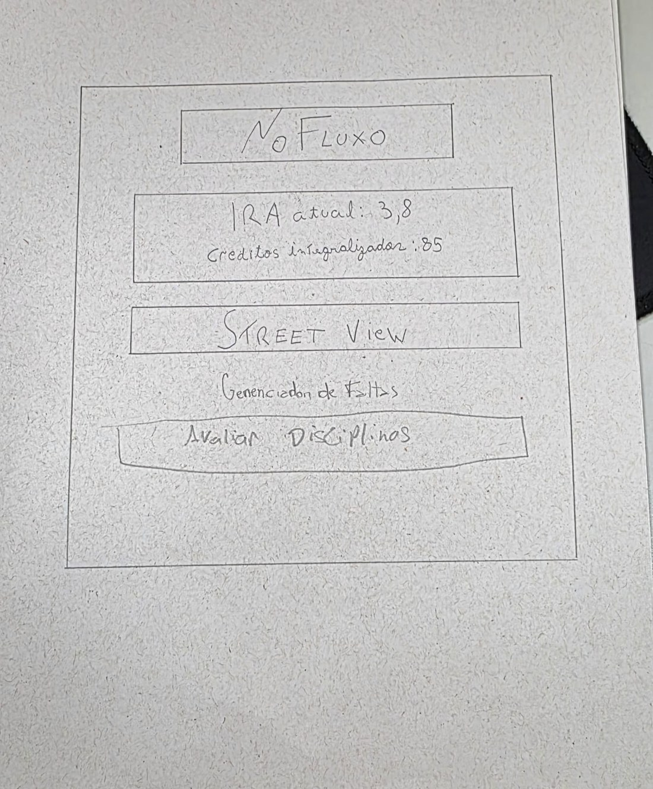
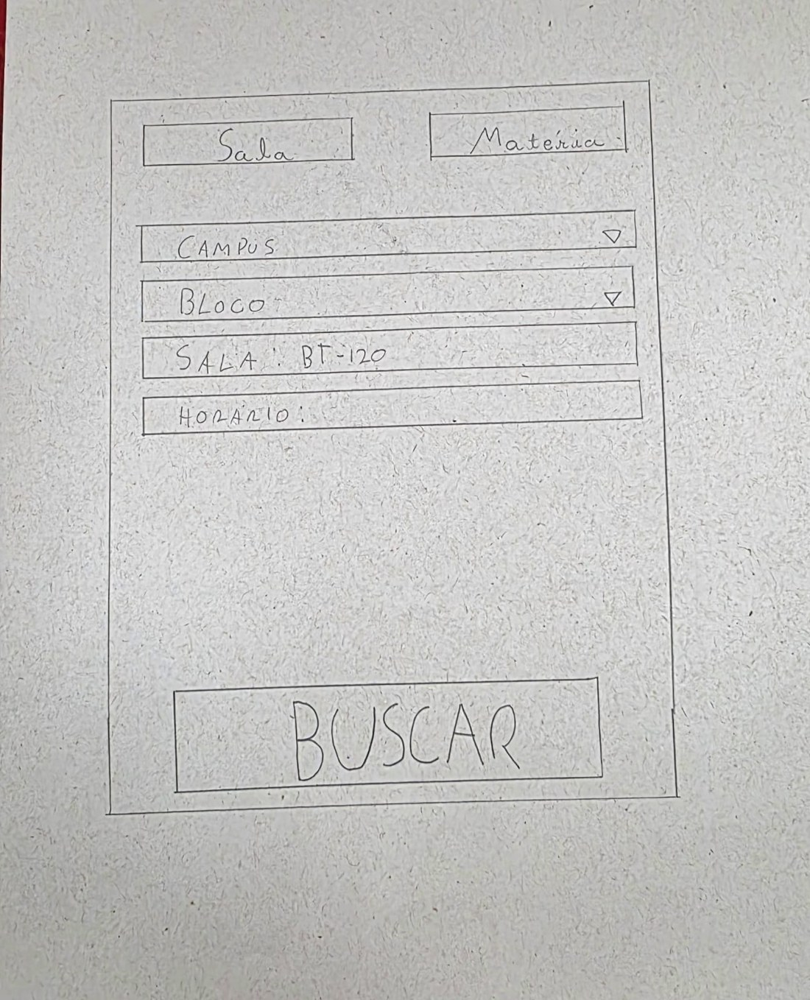
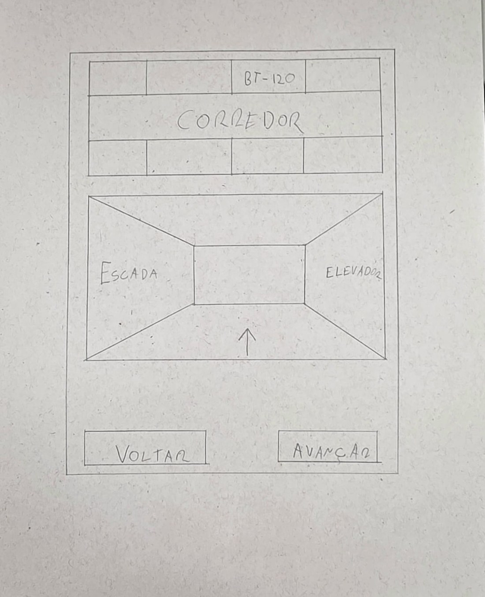
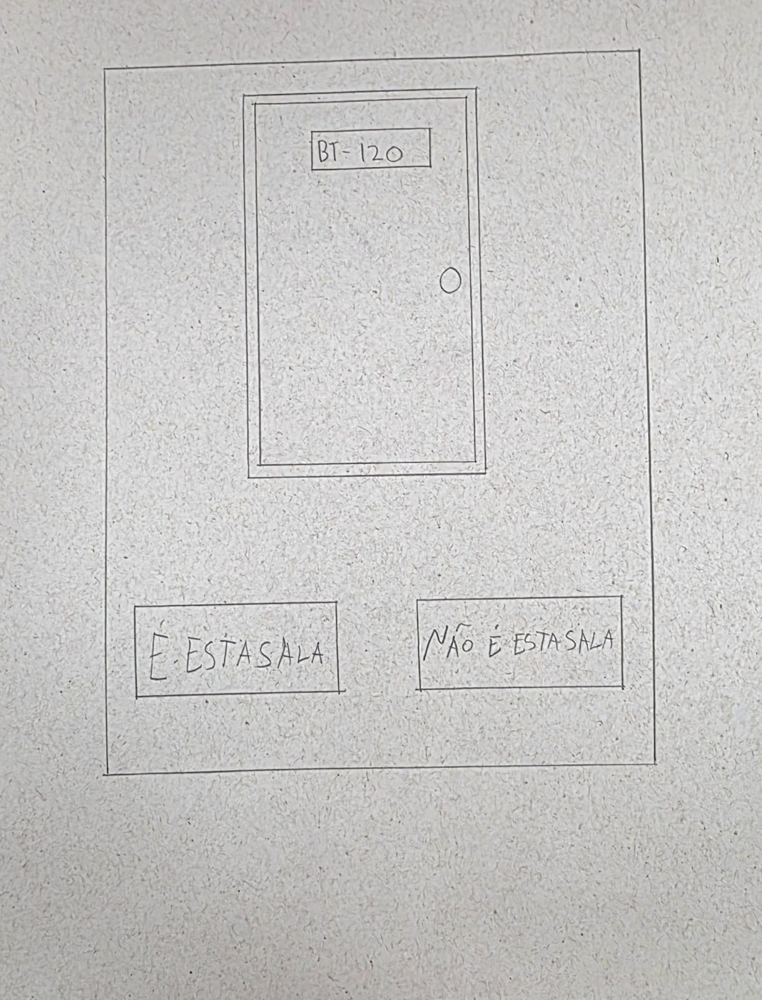

Protótipo de papel de baixa fidelidade
Autor: Matheus do Vale Lameira, matrícula 202070064 · Validador: Matheus do Vale Lameira
Funcionalidade: Street View · Conteúdo desta página: seção 2 · Tabelas 2 a 6 · Figuras 1 a 4
Documento completo em PDF: Baixar Grupo2MatheusdoValeEtapa6PrototipoPapelAltaFidelidade.pdf
Outros artefatos do autor: Visão geral e do storyboard ao protótipo de papel · Relato dos resultados da avaliação do protótipo de papel · Planejamento da avaliação do protótipo de alta fidelidade · Planejamento do relato dos resultados do protótipo de alta fidelidade · Anexos A a C: termos, questionário e instruções · Anexos D a F: formulários, roteiro e ficha de calibração
2. Protótipo de papel de baixa fidelidade
2.1 Construção do protótipo
Uma representação de baixa fidelidade é um rascunho ou esboço da interface, sem muita preocupação com os detalhes gráficos, e pode ser feita manualmente (Barbosa e Silva (2010), p. 249). Desenhei as telas à mão, uma por folha, em geral à mão livre, destacando os elementos principais com os quais o participante interage e sem detalhes que não importam para a avaliação (p. 358). A Tabela 2 mostra como representei cada elemento.
| Elemento | Como aparece no desenho |
|---|---|
| Botão | Retângulo com o rótulo escrito dentro. |
| Campo de texto | Retângulo com uma linha para escrever. |
| Menu de seleção | Retângulo com um triângulo apontando para baixo. |
| Mensagem | Faixa com o texto da mensagem. |
| Imagem | Retângulo com o desenho da cena (corredor, porta ou planta). |
| Elemento escolhido | Contorno grosso. |
| Cores | Sem cor: só grafite. Cor e contraste (P-6) ficam para o protótipo de alta fidelidade. |
| Toque | O participante aponta com o dedo ou com uma caneta (p. 360). |
| Código | O código de cada folha (H1, V1, V2 e V3) aparece na legenda da figura. |
2.2 Tela inicial
O aluno parte da tela inicial (home) do NoFluxo para abrir o Street View (Tabela 3). A HTA numera os objetivos como na Tabela 2 da etapa 5, e a tarefa da CTT é a que o nó da HTA realiza.
| Tela | O que mostra | HTA | Tarefa da CTT | Quadro | Figura |
|---|---|---|---|---|---|
| H1: Tela inicial do NoFluxo (home) | Painel do NoFluxo com o logotipo e o botão “Street View”; os demais itens do painel não fazem parte desta avaliação. | 1.1 | Abrir o Street View (interativa) | 3 | 1 |

Fonte: elaborada pelo autor.
2.3 Street View
O protótipo do Street View tem três telas, além da tela inicial (Tabela 4). A sala usada nas telas é BT-120, como no storyboard.
| Tela | O que mostra | HTA | Tarefa da CTT | Quadro | Figura |
|---|---|---|---|---|---|
| V1: Busca da sala | Abas “Sala” e “Matéria”, menus “Campus” e “Bloco”, campos “Sala” (exemplo: BT-120) e “Horário” e botão “Buscar”. | 1.2 e 1 | Informar a sala procurada (interativa) | 3 | 2 |
| V2: Localização e trajeto | Planta do bloco com a sala BT-120 identificada e o corredor e, abaixo, a imagem do corredor com seta, pontos de referência nomeados (escada e elevador) e os botões “Voltar” e “Avançar”. | 1.3, 2.1 e 2.2 | Exibir a localização da sala (sistema); Percorrer o trajeto no Street View (interativa); Observar o entorno para se situar (usuário) | 3 e 4 | 3 |
| V3: Entrada e confirmação da sala | Imagem da porta com a placa de identificação “BT-120” e os botões “É esta sala” e “Não é esta sala”. | 3.1 e 3.2 | Reconhecer a entrada e a identificação da sala (usuário); Confirmar que é a sala procurada (usuário); Voltar à busca, se não for a sala (interativa) | 5 e 6 | 4 |

Fonte: elaborada pelo autor.

Fonte: elaborada pelo autor.

Fonte: elaborada pelo autor.
2.4 Tarefa e rastreabilidade
Cada participante executa uma tarefa derivada da HTA, com menos de 20 minutos (Barbosa e Silva (2010), p. 306). A Tabela 5 traz o cenário que entrego ao participante, e a Tabela 6 liga a tarefa às telas, à HTA, à CTT, ao storyboard e às perguntas e aos problemas da etapa 5.
| Tarefa | Cenário entregue ao participante | Funcionalidade |
|---|---|---|
| T1 | Você está na primeira semana de aula e precisa chegar à sua primeira aula. Use o Street View para achar a sala e ter certeza de que é a sala certa. | Street View |
| Tarefa | Telas no caminho esperado | HTA | Tarefas da CTT | Quadros | Perguntas e problemas |
|---|---|---|---|---|---|
| T1 | H1, V1, V2 e V3 | Objetivos 1 a 3 | Localizar a sala procurada; Reconhecer o caminho até a sala; Identificar a sala | 3 a 6 | P-Q1 a P-Q5; problemas P-4, P-5 e P-6 |
Histórico de versão
| Versão | Data | Descrição | Autor(es) | Revisor(es) | Declaração de ferramenta de IA |
|---|---|---|---|---|---|
| 0.1 | 02/11/2026 | Publicação de Protótipo de papel de baixa fidelidade, a partir do documento Grupo2MatheusdoValeEtapa6PrototipoPapelAltaFidelidade, com os campos em branco e as figuras a preencher pelo autor | Matheus do Vale Lameira | Matheus do Vale Lameira | Claude (Anthropic): estruturação da página no padrão da Entrega 6 e revisão da estrutura; o conteúdo é do autor |
| 0.2 | 03/11/2026 | Atualização com a versão de 03/11/2026 do documento: figuras do protótipo de papel, resultados da avaliação do protótipo de papel e legenda dos códigos | Matheus do Vale Lameira | Matheus do Vale Lameira | Claude (Anthropic): estruturação da página no padrão da Entrega 6 e revisão da estrutura; o conteúdo é do autor |